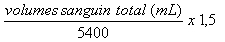

RÉSUMÉ DES CARACTÉRISTIQUES DU PRODUIT
ANSM - Mis à jour le : 31/03/2005
ANGIOCIS. Trousse pour préparation du pyrophosphate d'étain utilisé pour le marquage in vivo des hématies au technétium (99m Tc)
2. COMPOSITION QUALITATIVE ET QUANTITATIVE
Pyrophosphate de sodium décahydraté ........................................................................................... 20,12 mg
Pour un flacon.
Ce produit ne contient pas de conservateur antimicrobien.
Pour la liste complète des excipients, voir rubrique 6.1.
Poudre pour solution injectable.
4.1. Indications thérapeutiques
Ce médicament est à usage diagnostique uniquement.
Marquage in vivo des hématies pour la scintigraphie du compartiment sanguin.
Les principales indications sont:
· Angiocardioscintigraphie pour l'étude de:
o la mesure de la fraction d'éjection ventriculaire,
o l'analyse cinétique, en amplitude et en phase, globale et segmentaire du myocarde.
· Scintigraphie de perfusion d'un organe ou de malformations vasculaires.
· Diagnostic et localisation d'hémorragie digestive occulte.
4.2. Posologie et mode d'administration
Posologie
Scintigraphie du compartiment sanguin
La quantité optimale d'étain non radioactif à l'état stanneux pour le marquage des hématies in vivo est de 0,05 µg à 1,25 µg/mL de sang. Le calcul de la volémie est effectué en fonction de la taille et du poids du patient.
Le volume de la solution reconstituée à injecter par voie intraveineuse est calculé à l'aide de la formule suivante:

Le pertechnétate (99mTc) de sodium est administré 30 minutes plus tard. L'activité moyenne administrée est de 890 MBq (740-925 MBq).
L'examen peut être réalisé immédiatement après l'injection du traceur radioactif.
Posologie pédiatrique
Chez l'enfant, l'activité à injecter est une fraction de celle utilisée chez l'adulte, fraction obtenue par application des coefficients ci-dessous en fonction de la masse corporelle.
|
Coefficients à appliquer à l'activité chez l'adulte: |
||
|
3 kg = 0,10 |
22 kg = 0,50 |
42 kg = 0,78 |
|
4 kg = 0,14 |
24 kg = 0,53 |
44 kg = 0,80 |
|
6 kg = 0,19 |
26 kg = 0,56 |
46 kg = 0,82 |
|
8 kg = 0,23 |
28 kg = 0,58 |
48 kg = 0,85 |
|
10 kg = 0,27 |
30 kg = 0,62 |
50 kg = 0,88 |
|
12 kg = 0,32 |
32 kg = 0,65 |
52-54 kg = 0,90 |
|
14 kg = 0,36 |
34 kg = 0,68 |
56-58 kg = 0,92 |
|
16 kg = 0,40 |
36 kg = 0,71 |
60-62 kg = 0,96 |
|
18 kg = 0,44 |
38 kg = 0,73 |
64-66 kg = 0,98 |
|
20 kg = 0,46 |
40 kg = 0,76 |
68 kg = 0,99 |
Chez le très jeune enfant (moins de 1 an), une activité minimale de 80 MBq est nécessaire pour l'obtention d'images de qualité satisfaisante.
Compte tenu de la durée de fixation des sels stanneux sur les hématies, il est conseillé de ne pas répéter l'examen avant un délai de trois mois.
Mode d'administration
Administration par voie intraveineuse stricte.
Technique de marquage des hématies:
· Reconstitution du pyrophosphate stanneux:
Le lyophilisat de pyrophosphate stanneux (composé non radioactif) est reconstitué dans un premier temps à l'aide d'une solution isotonique de chlorure de sodium injectable.
· Marquage in vivo:
Injection de la solution reconstituée de pyrophosphate stanneux suivie de l'injection d'une solution injectable de pertechnétate (99mTc) de sodium, 30 minutes plus tard.
Aucune connue à ce jour.
4.4. Mises en garde spéciales et précautions d'emploi
Mises en gardes spéciales
Ce produit est un médicament radiopharmaceutique.
Les produits radiopharmaceutiques ne peuvent être réceptionnés, utilisés et administrés que par des personnes autorisées dans des services agréés.
Leur réception, leur stockage, leur utilisation, leur transfert et leur élimination sont soumis aux réglementations et aux autorisations appropriées des autorités compétentes.
Les produits radiopharmaceutiques doivent être préparés de manière à satisfaire à la fois aux normes de radioprotection et de qualité pharmaceutique. Les précautions appropriées d'asepsie doivent être prises afin de satisfaire aux exigences des Bonnes Pratiques de Fabrication pharmaceutique.
Précautions particulières d'emploi
Il est recommandé de réaliser le marquage in vivo des hématies au (99mTc) avant toute administration de produits de contraste iodés car le rendement de marquage des cellules pourrait en être affecté.
Chez le nouveau-né et l'enfant, il convient de s'assurer que l'intérêt diagnostique de l'examen justifie le risque d'irradiation encouru.
4.5. Interactions avec d'autres médicaments et autres formes d'interactions
Une diminution du rendement de marquage des hématies a été observée en présence des substances suivantes: héparine, étain, certains sels d'aluminium, prazosine, méthyldopa, hydralazine, digitaliques, quinidine, bêta-bloquants adrénergiques (propranolol par exemple), antagonistes calciques (vérapamil, nifédipine par exemple), dérivés nitrés (trinitrine par exemple), anthracyclines, produits de contraste iodés, cathéters en téflon (l'étain à l'état divalent est susceptible de réagir avec le cathéter).
Lorsqu'il est nécessaire d'administrer des produits radiopharmaceutiques à la femme en âge de procréer, toute éventualité de grossesse doit être écartée. Toute femme n'ayant pas eu ses règles doit être considérée comme enceinte jusqu'à preuve du contraire. Dans le doute, il est important que l'exposition aux radiations soit réduite au minimum pour obtenir les informations cliniques souhaitées. D'autres techniques n'impliquant pas l'emploi de radiations ionisantes peuvent être envisagées si elles n'altèrent pas la qualité diagnostique.
Les examens utilisant des radionucléides chez la femme enceinte entraînent également l'irradiation du fœtus. Il ne faut réaliser au cours de la grossesse que les seules investigations absolument nécessaires lorsque le bénéfice probable dépasse les risques encourus par la mère et le fœtus.
Si l'administration d'un produit radioactif est indispensable, le lait doit être tiré avant l'injection et conservé pour être utilisé ultérieurement. L'allaitement doit être suspendu pendant au moins 12 heures après l'injection et le lait produit pendant cette période doit être éliminé. L'allaitement peut être repris lorsque l'activité dans le lait ne risque pas d'entraîner une dose de radiation pour l'enfant supérieure à 1 mSv.
4.7. Effets sur l'aptitude à conduire des véhicules et à utiliser des machines
Aucun connu à ce jour.
Pour tous les patients, l'exposition aux radiations ionisantes doit être justifiée par le bénéfice diagnostique attendu. La radioactivité administrée doit être telle que l'irradiation qui en découle soit aussi faible que possible, en gardant à l'esprit la nécessité d'obtenir le diagnostic requis.
L'exposition aux radiations ionisantes peut potentiellement induire des cancers ou développer des déficiences héréditaires. L'expérience montre que, pour ce qui est des examens diagnostiques en médecine nucléaire, la fréquence de ces effets indésirables est très faible en raison des faibles activités utilisées.
Pour la plupart des examens de médecine nucléaire à des fins de diagnostic, la dose de radiations délivrée (dose efficace) est inférieure à 20 mSv. L'utilisation de plus fortes activités se justifie dans certaines circonstances cliniques.
Des effets indésirables apparus à la suite de l'administration intraveineuse du composé marqué au (99mTc) ou non marqué ont été signalés de façon isolée (1-5/100 000 administrations). Les effets indésirables suivants ont été décrits: rougeur du visage, céphalées, vasodilatation, nausées, sensations vertigineuses, œdème du bras, érythème et prurit au site d'injection, sueurs et acouphènes, urticaire, prurit généralisé, arythmie cardiaque, œdème du visage, coma.
En cas de surdosage accidentel par ce produit radiopharmaceutique, l'arsenal thérapeutique est limité car l'élimination du produit est fonction de la durée de vie physiologique des hématies.
Une diurèse forcée avec mictions fréquentes est recommandée en cas de surdosage par le pertechnétate (99mTc).
5. PROPRIETES PHARMACOLOGIQUES
5.1. Propriétés pharmacodynamiques
Classe pharmacothérapeutique: produit radiopharmaceutique à usage diagnostique,
Code ATC: V09GA06.
Aux doses utilisées, le pyrophosphate d'étain, le pertechnétate (99mTc) de sodium, le pyrophosphate d'étain (99mTc) et les hématies radiomarquées ne peuvent avoir aucune activité pharmacodynamique.
5.2. Propriétés pharmacocinétiques
L'injection intraveineuse de sels stanneux provoque une "surcharge en étain" des hématies. L'injection de pertechnétate (99mTc) de sodium entraîne une accumulation et une rétention du pertechnétate (99mTc) de sodium au niveau des plexus choroïdes et des hématies. L'administration intraveineuse de 10-20 µg de l'ion stanneux par kg de poids corporel (sous forme de pyrophosphate stanneux) suivie par l'administration 30 minutes plus tard de pertechnétate présentant une activité de 370-740 MBq permet d'obtenir un marquage efficace de la masse sanguine. Dans les conditions physiologiques, le pertechnétate injecté par voie intraveineuse diffuse librement à travers la membrane érythrocytaire. Cependant, lorsque les hématies ont été préalablement exposées à l'ion stanneux, le pertechnétate (99mTc) de sodium est réduit dans le compartiment intracellulaire et se lie aux chaînes de la globine. Les mécanismes de la liaison du pertechnétate (99mTc) de sodium aux hématies préalablement exposées à l'étain restent à élucider. Néanmoins, 20 % de la dose de pertechnétate administrée pénètrent dans les hématies et se lient à l'une des chaînes bêta de la globine.
Les 70-80 % restants du pertechnétate sont localisés dans le cytoplasme ou au niveau de la membrane des hématies. Il convient toutefois de signaler qu'une diminution de la charge à la surface des hématies entraîne une diminution de 20 % du marquage.
Le moment le plus propice pour l'injection du pertechnétate (99mTc) est de 30 minutes après l'administration du pyrophosphate.
A 10 et à 100 minutes après l'injection, on retrouve dans le sang respectivement 77 ± 15 % et 71 ± 14 % de l'activité administrée. Ainsi, le pourcentage de l'activité circulante ne diminue que de 6% pendant les deux heures suivant l'injection.
Le marquage des hématies par le pertechnétate (99mTc) persiste jusqu'au 8ème jour. Aucune conséquence notable n'est observée pour des posologies allant jusqu'à 0,02 mg d'étain/kg.
5.3. Données de sécurité préclinique
Il n'existe pas de données spécifiques de sécurité précliniques concernant les hématies marquées au technétium. La toxicité des ions pertechnétate et des sels d'étain divalents a fait l'objet d'un certain nombre d'études. Les effets toxiques d'ordre systémique ne s'observent qu'à des posologies relativement élevées par voie parentérale de sorte que le coefficient de sécurité est au moins égal à 150.
Les études de toxicité en administration réitérée chez le rat à des doses 50 à 100 fois supérieures à la dose clinique recommandée chez l'homme n'ont pas mis en évidence des anomalies macroscopiques ou microscopiques.
Il a été fait état d'un faible pouvoir mutagène des sels d'étain divalents.
Il n'existe pas d'étude concernant les éventuels effets sur la reproduction et le potentiel carcinogène.
Chlorure stanneux dihydraté, acide chlorhydrique concentré, azote
En l'absence d'études d'incompatibilité, ce médicament ne doit pas être mélangé avec d'autres médicaments.
12 mois à compter de la date de fabrication.
6 heures après reconstitution de la solution.
Ne pas utiliser le produit au-delà de la date indiquée sur le conditionnement extérieur et l'étiquette du flacon.
6.4. Précautions particulières de conservation
Conserver la trousse et le produit reconstitué à une température comprise entre +2°C et +8°C.
6.5. Nature et contenu de l'emballage extérieur
Flacon de 15 mL en verre étiré, incolore, de type I, de la Pharmacopée Européenne, fermé par un bouchon en caoutchouc et scellé par une capsule en aluminium.
6.6. Précautions particulières d’élimination et de manipulation
Tout produit non utilisé ou déchet doit être éliminé conformément à la réglementation en vigueur.
7. TITULAIRE DE L’AUTORISATION DE MISE SUR LE MARCHE
CIS BIO INTERNATIONAL
RN 306
BP 32
91192 Gif-sur-Yvette Cedex
8. NUMERO(S) D’AUTORISATION DE MISE SUR LE MARCHE
· 561 224-5: 24,17 mg de poudre en flacon (verre); boîte de 5 flacons.
9. DATE DE PREMIERE AUTORISATION/DE RENOUVELLEMENT DE L’AUTORISATION
[à compléter par le titulaire]
10. DATE DE MISE A JOUR DU TEXTE
[à compléter par le titulaire]
Le technétium (99mTc) décroît en émettant principalement un rayonnement gamma d'une énergie moyenne de 140 keV, avec une période de 6 heures, en donnant du technétium (99mTc) considéré comme un isotope stable.
Selon la publication n° 80 de la CIPR (Commission Internationale de Protection Radiologique), les doses de radiation absorbées par les patients après l'administration intraveineuse de pertechnétate (99mTc) de sodium pour le marquage in vivo des hématies sont les suivantes:
HEMATIES MARQUEES AU TECHNETIUM (99mTc)
|
Organe |
Doses absorbées par unité d'activité administrée (mGy/MBq) |
||||
|
|
Adulte |
15 ans |
10 ans |
5 ans |
1 an |
|
Cœur |
2,3 . 10-2 |
2,9 . 10-2 |
4,3 . 10-2 |
6,6 . 10-2 |
1,1 . 10-1 |
|
Poumons |
1,8 . 10-2 |
2,2 . 10-2 |
3,5 . 10-2 |
5,6 . 10-2 |
1,1 . 10-1 |
|
Reins |
1,8 . 10-2 |
2,2 . 10-2 |
3,6 . 10-2 |
5,7 . 10-2 |
1,1 . 10-1 |
|
Rate |
1,4 . 10-2 |
1,7 . 10-2 |
2,7 . 10-2 |
4,3 . 10-2 |
8,1 . 10-2 |
|
Foie |
1,3 . 10-2 |
1,7 . 10-2 |
2,6 . 10-2 |
4,0 . 10-2 |
7,2 . 10-2 |
|
Surrénales |
9,9 . 10-3 |
1,2 . 10-2 |
2,0 . 10-2 |
3,0 . 10-2 |
5,6 . 10-2 |
|
Paroi vésicale |
8,5 . 10-3 |
1,1 . 10-2 |
1,4 . 10-2 |
1,7 . 10-2 |
3,1 . 10-2 |
|
Surfaces osseuses |
7,4 . 10-3 |
1,2 . 10-2 |
1,9 . 10-2 |
3,6 . 10-2 |
7,4 . 10-2 |
|
Pancréas |
6,6 . 10-3 |
8,1 . 10-3 |
1,3 . 10-2 |
1,9 . 10-2 |
3,3 . 10-2 |
|
Vésicule biliaire |
6,5 . 10-3 |
8,1 . 10-3 |
1,3 . 10-2 |
2,0 . 10-2 |
3,0 . 10-2 |
|
Moelle osseuse |
6,1 . 10-3 |
7,6 . 10-3 |
1,2 . 10-2 |
2,0 . 10-2 |
3,7 . 10-2 |
|
Œsophage |
6,1 . 10-3 |
7,0 . 10-3 |
9,8 . 10-3 |
1,5 . 10-2 |
2,3 . 10-2 |
|
Thymus |
6,1 . 10-3 |
7,0 . 10-3 |
9,8 . 10-3 |
1,5 . 10-2 |
2,3 . 10-2 |
|
Thyroïde |
5,7 . 10-3 |
7,1 . 10-3 |
1,2 . 10-2 |
1,9 . 10-2 |
3,6 . 10-2 |
|
Paroi gastrique |
4,6 . 10-3 |
5,9 . 10-3 |
9,7 . 10-2 |
1,4 . 10-2 |
2,5 . 10-2 |
|
Paroi du côlon supérieur |
4,0 . 10-3 |
5,1 . 10-3 |
8,0 . 10-3 |
1,3 . 10-2 |
2,2 . 10-2 |
|
Intestin grêle |
3,9 . 10-3 |
4,9 . 10-3 |
7,8 . 10-3 |
1,2 . 10-2 |
2,1 . 10-2 |
|
Utérus |
3,9 . 10-3 |
4,9 . 10-3 |
7,4 . 10-3 |
1,1 . 10-2 |
1,9 . 10-2 |
|
Colon |
3,7 . 10-3 |
4,8 . 10-3 |
7,5 . 10-3 |
1,2 . 10-2 |
2,0 . 10-2 |
|
Ovaires |
3,7 . 10-3 |
4,8 . 10-3 |
7,0 . 10-3 |
1,1 . 10-2 |
1,9 . 10-2 |
|
Cerveau |
3,6 . 10-3 |
4,6 . 10-3 |
7,5 . 10-3 |
1,2 . 10-2 |
2,2 . 10-2 |
|
Autres tissus |
3,5 . 10-3 |
4,5 . 10-3 |
7,3 . 10-3 |
1,3 . 10-2 |
2,3 . 10-2 |
|
Seins |
3,5 . 10-3 |
4,1 . 10-3 |
7,0 . 10-3 |
1,1 . 10-2 |
1,9 . 10-2 |
|
Paroi du côlon inférieur |
3,4 . 10-3 |
4,4 . 10-3 |
6,9 . 10-3 |
1,0 . 10-2 |
1,8 . 10-2 |
|
Muscles |
3,3 . 10-3 |
4,0 . 10-3 |
6,1 . 10-3 |
9,4 . 10-3 |
1,7 . 10-2 |
|
Testicules |
2,3 . 10-3 |
3,0 . 10-3 |
4,4 . 10-3 |
6,9 . 10-3 |
1,3 . 10-2 |
|
Peau |
2,0 . 10-3 |
2,4 . 10-3 |
3,8 . 10-3 |
6,2 . 10-3 |
1,2 . 10-2 |
|
Dose efficace (mSv/MBq) |
7,0 . 10-3 |
8,9 . 10-3 |
1,4 . 10-2 |
2,1 . 10-2 |
3,9 . 10-2 |
Dans le cadre de la scintigraphie du compartiment sanguin, l'administration d'une activité de 925 MBq entraîne une dose efficace de 6,5 mSv (chez un adulte de 70 kg) et la dose d'irradiation délivrée au niveau de l'organe critique (le cœur) est généralement de 21 mGy.
12. INSTRUCTIONS POUR LA PREPARATION DES RADIOPHARMACEUTIQUES
Méthode de préparation
Les précautions appropriées d'asepsie et de radioprotection doivent être respectées.
Prendre un flacon de la trousse. A l'aide d'une seringue hypodermique, introduire à travers le bouchon, 3 mL de solution injectable de chlorure de sodium à 0,9 %.
Ne pas utiliser d'aiguille de mise à l'air, le mélange lyophilisé étant sous atmosphère d'azote.
Calculer la volémie à partir de table classique en fonction de la taille et du poids. Calculer le volume de la solution reconstituée à injecter par voie intraveineuse à l'aide de la formule suivante:
Trente minutes après l'injection, administrer par voie intraveineuse une solution de pertechnétate (99mTc) de sodium présentant une activité de 740 à 925 MBq.
L'examen peut être réalisé immédiatement après l'injection du traceur radioactif.
L'administration de produits radiopharmaceutiques présente des risques pour l'entourage du patient en raison de l'irradiation externe ou de la contamination par les urines, les vomissements, les expectorations. Par conséquent, il faut prendre des mesures de protection contre les radiations conformément aux réglementations nationales.
L'élimination des déchets doit se faire en accord avec les réglementations nationales et internationales
Liste I.
Médicament réservé à l'usage hospitalier.
Les produits radiopharmaceutiques ne doivent être utilisés que par des personnes qualifiées. Ils ne peuvent être délivrés qu'à des praticiens ayant obtenu l'autorisation spéciale prévue à l'article R 5234-6 du Code de la Santé Publique.